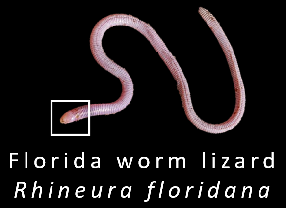
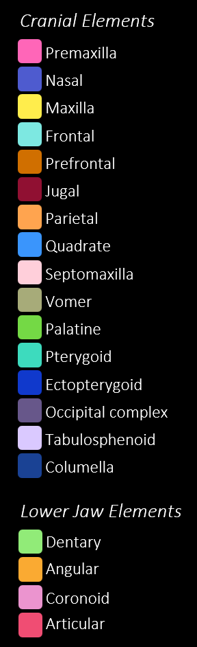

Florida Worm Lizard Skull Anatomy
Drag to rotate, scroll to zoom.
Skull of a Florida worm lizard, Rhineura floridana, with bones colored and labelled to demonstrate skull anatomy. 3D model produced from a CT scan of a Florida Museum of Natural History specimen (UF:herp:121174) . Digital dissection by Jaimi Gray and Amber Singh using VGStudio Max. Scene created and and mesh files generated by Jaimi Gray using VGStudio and Blender. Anatomy labelled by Jaimi Gray, based on “An Atlas of Amphisbaenian Skull Anatomy” in Biology of the Reptilia, vol. 21, Morphology I, The Skull and Appendicular Locomotor Apparatus of Lepidosauria. (pp.621-738).

